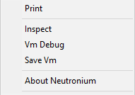

Frequently Asked Questions
Why Neutronium?
The idea behind Neutronium is to provide a HTML-CSS-Javascript UI engine empowered with two way bindings supporting all features of WPF MVVM bindings. This way Neutronium can be as "replacement" of WPF.
How Neutronium compares with other libraries?
Neutronium is electron for .NET? Well, kind of. Neutronium however is a higher abstraction so that you don't need to care about Chromium implementation such as renderer or browser processes.
All are libraries offering binding to Chromium using proprietary binding (Awesomium), or Chromium Embedded Framework bindings. All of them present much lower level of integration than Neutronium. Note that internally Neutronium uses ChromiumFx.
Provides bindings to Chromium Embedded Framework for NET/.NET Core. Main difference with Neutronium: Chromely is a cross-platform solution whereas Neutronium is currently only for windows. Same as frameworks below, this is a simpler integration compared to Neutronium.
Provides react to WPF/UWP bindings. Almost the contrary approach as Neutronium as react-to-native converts react to native UI component whereas Neutronium uses embedded web browser.
Why vue.js?
Vue.js is providing C# to javascript binding in Neutronium application. Neutronium Core provide a generic architecture (see more here) where javascript framework can be plugged in. This framework should provide reactivity with two way bindings and listeners patterns and should not be to opinionated in order to fit Neutronium MVVM workflow.
First version of neutronium was only using knockout.js which is compliant with these features.
Then appeared Vue.js which is also has same prerequisites but quickly with a much larger community. Vue.js beyond reactivity provides great tooling, powerful template engine, router, etc... As such Vue.js is the preferred option to develop with Neutronium.
Is Neutronium cross-platform?
No, Currently Neutronium is windows only.
Whereas Neutronium infrastructure is currently build for .Net 4.7.2 and .Net Standard 2.0, there is currently no Web engine binding for .Net.Core.
This may be provided in the future thought check this issue for complete discussion.
Is it possible to configure same origin policy or other browser features in a Neutronium application?
How to implement a frameless HTML window?
1. In the HTML markup:
Since version 0.6.0, Neutronium implements out of the box support for CSS property -webkit-app-region: drag:
<div style="-webkit-app-region: drag">
</div>
This property make the whole div draggable.
You have to use no-drag value for buttons or other clickable regions with the draggable elements:
button {
-webkit-app-region: no-drag;
}
2. Window Buttons:
In order to help implement window interaction, Neutronium.WPF provides WindowViewModel that exposes the Close, Minize, Maximize commands so that you can use it as a ViewModel for buttons
//window is the WPF window
var viewModel = new WindowViewModel(window);
3. WPF window:
To make a WPF window chromeless, Neutronium.WPF provides Chromeless behavior:
<Window x:Class="CodeVizualization.MainWindow"
xmlns:neutronium="clr-namespace:Neutronium.WPF;assembly=Neutronium.WPF"
xmlns:i="clr-namespace:System.Windows.Interactivity; assembly=System.Windows.Interactivity">
<i:Interaction.Behaviors>
<neutronium:Chromeless />
</i:Interaction.Behaviors>
This behavior creates a frameless window and takes care of expected drag-and-drop behavior.
See Example.ChromiumFx.Vue.Chromeless example for a working example of frameless Neutronium Window.
Codegravity and Neutronium.SPA.Demo projects are also frameless window implementations.
How to display Window only when HTML control is rendering?
HTMLViewControl and HTMLWindow both have a IsHTMLLoaded property that is set to true when HTML is rendered, so it is possible to bind the window visibility to this property.
Furthermore Neutronium.WPF provide a BoolToHiddenConverter that performs adequate conversion from IsHTMLLoaded to visibility transforming false into Hidden (standard BooleanToVisibility converts false into Collapsed).
Ex:
<Window x:Class="MainWindow"
xmlns:neutronium="clr-namespace:Neutronium.WPF;assembly=Neutronium.WPF">
<Window.Resources>
<neutronium:BoolToHiddenConverter x:Key="BoolToHidden"/>
</Window.Resources>
<Grid>
<neutronium:HTMLViewControl x:Name="HtmlView" RelativeSource="View\index.html" />
</Grid>
<Window.Visibility>
<Binding ElementName="HtmlView" Path="IsHTMLLoaded" Converter="{StaticResource BoolToHidden}"/>
</Window.Visibility>
Is it possible to print the content of the page?
With CEF APIs, it is possible to customize context menu and add a print command back to a Neutronium application.
To do so,
- register an event on browser OnDisplay
private void Window_Loaded(object sender, RoutedEventArgs e)
{
HTMLViewControl.OnDisplay += WcBrowser_OnDisplay;
}
- Add an event on
ContextMenuHandler OnBeforeContextMenu
private void WcBrowser_OnDisplay(object sender, Neutronium.Core.Navigation.DisplayEvent e)
{
var windowCfx = wcBrowser.WPFWebWindow as IWPFCfxWebWindow;
var cfxBrowser = windowCfx.ChromiumWebBrowser;
cfxBrowser.ContextMenuHandler.OnBeforeContextMenu += ContextMenuHandler_OnBeforeContextMenu;
}
- In
ContextMenuHandler_OnBeforeContextMenuadd the Print command
private void ContextMenuHandler_OnBeforeContextMenu(object sender, Chromium.Event.CfxOnBeforeContextMenuEventArgs e)
{
var model = e.Model;
model.InsertItemAt(0,(int)ContextMenuId.MENU_ID_PRINT, "Print");
model.InsertSeparatorAt(1);
}
Result:

See Example.ChromiumFX.Vue.SOP for working example.